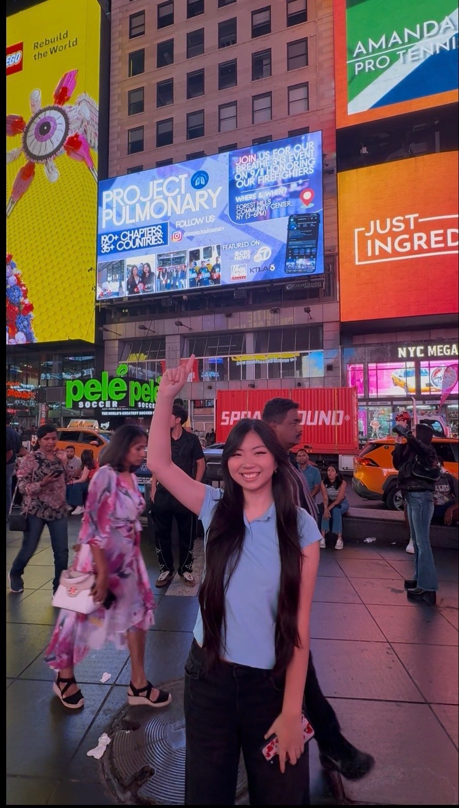
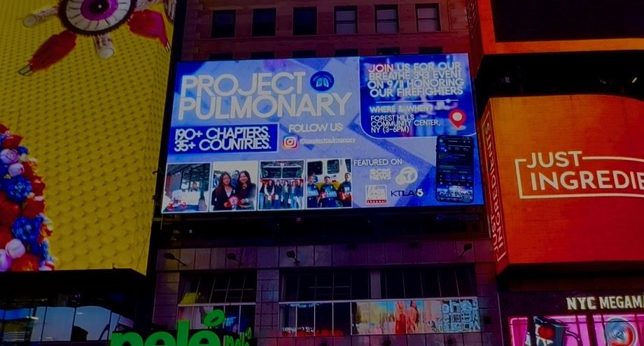
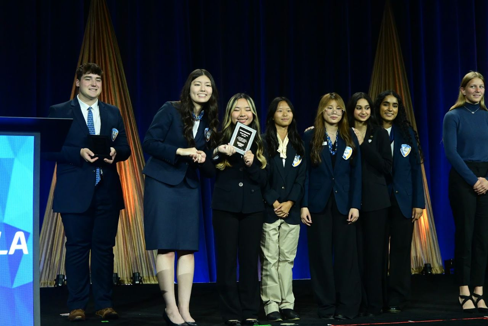
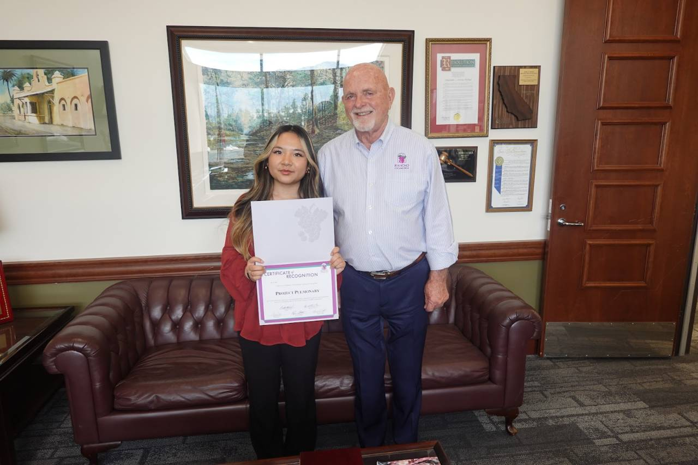
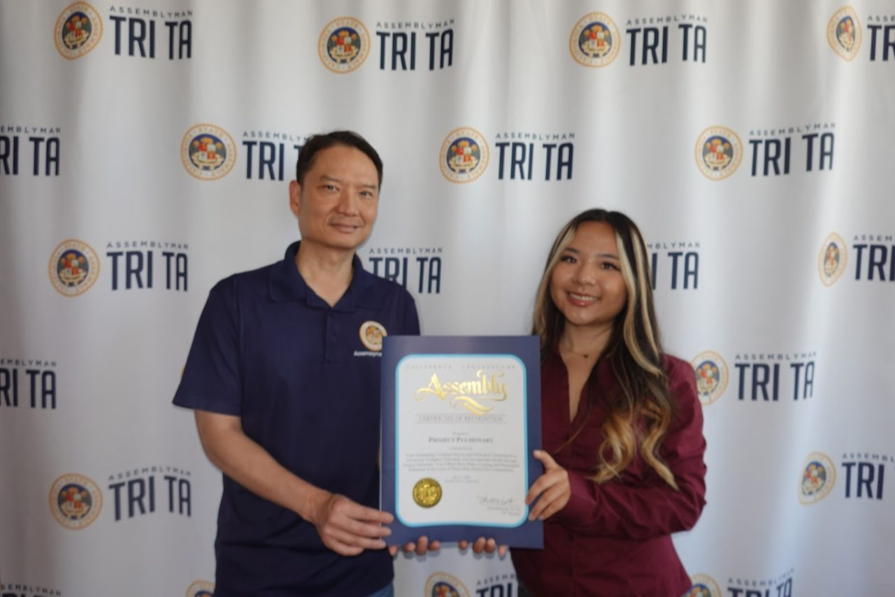

Press & recognition
Press
200+student-led chapters in 40+ countries
50,000+firefighters reached at 4,500+ fire stations
10,000+handwritten Letters4Lungs delivered
$65K+in grants secured for firefighter health
On air
From the Segments
Stills from our television appearances. Select one to watch the full segment.
Featured coverage
In the News
Every story links to the original article or broadcast.
Spectrum NewsOct. 12, 2026Student-Driven Initiative Aims to Improve Lung Health for Firefighters, First RespondersA Rancho Cucamonga senior started Project Pulmonary after the Palisades and Eaton fires. Its chapters collect supplies and raise money for detox saunas.Watch on spectrumlocalnews.com FOX 11 Los AngelesJuly 15, 2026How Two High School Students Are Working to Protect Firefighters

NYC Times Square
Featured on a Times Square Billboard
Project Pulmonary was featured on a digital billboard in Times Square, New York City, highlighting our chapter network and the Forest Hills 9/11 service event.

Grants & awards
Grants
Commendations & honors
Commendations
- Points of LightDaily Point of Light Award, May 2026
- Born This Way FoundationRecognized and featured on Channel Kindness
- Bold JourneyRecognized and featured
- NYC Mayor MamdaniCommendation
- Assemblymember Jacqui IrwinCalifornia State Assembly
- Mayor of Rancho CucamongaCommendation
- Dothan Mayor SalibaCommendation, Alabama
- Commissioner DanielsAlabama District 1
- Hershey Heartwarming Young HeroesHonoree



Full recaps on Instagram. Media inquiries: projectpulmonary@gmail.com

Get Involved
Start one at your school, fund the next delivery, or bring Project Pulmonary to your department.
Project Pulmonary is a 501(c)(3). Every gift is tax-deductible.
Supported by
Backed and Funded By
Partners and sponsors